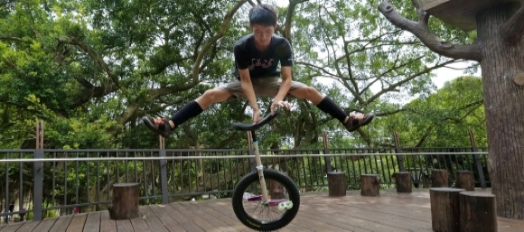

Flatland
I Flatland ska man göra tricks med enhjulingen på marken. Man tävlar en mot en och vinnaren (alltså den som domarna tycker har imponerat mest) går vidare och får möta en ny motståndare. Detta är en mycket teknisk gren som kräver mycket övning. Bilden nedan leder till en video med några av dom bästa flatlandcyklisterna i världen.
